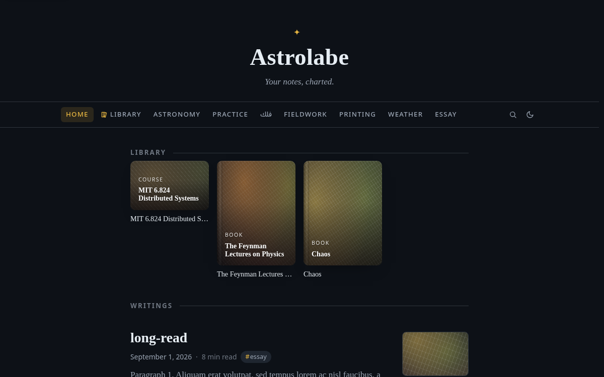
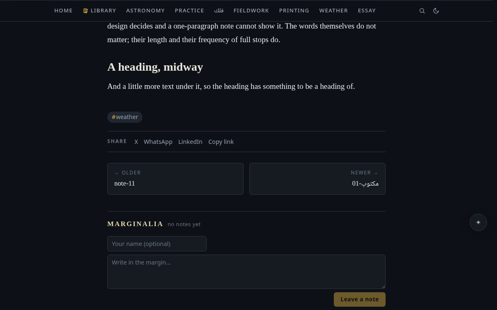

Blog mode
The stock blog: masthead and topic nav, article pages, the dashboard home, RSS and SEO.
PUBLIC_LAYOUT=blog (or Settings → Publishing & comments → Public layout → Blog) re-dresses
the visitor-facing site as a classic blog: a masthead with the site name and SITE_TAGLINE, a
horizontal nav of topic categories, article pages with title, date, word count, reading time and
tags, comments below (with COMMENTS=on), and a footer (SITE_FOOTER, default
© <year> <SITE_NAME>; {year} and {siteName} placeholders are substituted). Arabic and other
RTL content renders per-article in its natural direction — and SITE_LANG=ar mirrors the whole
blog shell to match (see Arabic & RTL). Signed-in admins are unaffected — the
full app, sidebar and all, stays exactly as it is; the blog shell exists only for visitors. Post
dates take month names from the chrome language (English chrome says August, Arabic chrome says
أغسطس) and digits from the instance numeral policy; BLOG_LOCALE is that tag, and the RSS
channel language (any BCP47 tag, default en).

The home page opens with HOME_NOTE rendered as an intro section (when that note is
published) above the reverse-chronological post list. Topic pages live at /topic/<tag>;
article deep links keep their normal note URLs.
What counts as a post
Every note with publish: true, newest first. A post's date comes from
frontmatter — date:, created:, or published:, the first that parses wins (bare YAML dates
like 2024-05-01 and quoted/ISO strings both work); otherwise the file's creation/
modification time — so if you migrated a vault by copying files (which resets file times), add
date: frontmatter to your posts or they will all sort as "created the day of the copy". The
excerpt is the first real paragraph of prose (markdown stripped, template furniture like bare
timestamps and Tags: #a #b lines skipped), cut at ~220 characters on a word boundary.
GET /api/posts serves the list.
Notes in the templates folder never appear in the post list,
RSS or the dashboard, even when they carry publish: true so the notes made from them inherit it.
Set
EXCLUDE_TAGSbefore you go live. The topic nav is built from the tags of published notes — including workflow tags (status markers like#draft/#seedling, zettel maturity, todo states), which would otherwise surface as public categories. List them inEXCLUDE_TAGSand they disappear from the nav, topic pages, and article tag chips; your vault and the admin view are unaffected.
The nav is always one line
However many topics your published tags add up to, the row measures itself and folds whatever will not fit into an inline "More ▾" menu beside the topics that do — re-measured on every resize, in either direction, so it never wraps into a second ragged line. Below ~840px the topics collapse into the usual burger panel, which shows every one of them at once.
Your collections do not collapse with them. Where the row carries collection chips, Home and
those chips stay in the bar at every width — swiping sideways if there are more of them than the
phone is wide — and only the topics fold away. A declared collection is the site's own structure,
and a structure reachable only through a menu labelled Topics has been demoted to one of them.
A hairline sits between the two runs, because GAMES the collection and games the topic are
otherwise the same pill twice.
Topic names are the localised label where one exists; the URL stays the canonical slug.
Custom public folders
Collections and author-site gallery cards are also available in designed mode, with the same visibility and placement settings.
Where categories come from is one choice, at the top of the section: Tags (a topic per
tag, the default) or Folders (the vault's own order). Under Folders, every published note
takes its parent folder as its category: the folder's name is the category's title (a sorting
prefix such as 2| is stripped), the mark you gave the folder in the tree is its mark, and the
navigation, the home band and each category's page come from that alone. Notes at the vault root
have no category. Tag topics leave the navigation; tags still show on posts. A folder note (a
note named like the folder, or index.md inside it) gives the category its description:, a
title:, an icon: and hidden: true, from the vault itself. Under Tags, collections are
hand-made topics: a collection is a tag you curate yourself, and it sits in the navigation beside
the tag topics. Collections do not exist in
this mode; the folders are the categories.
Topics are what your notes say about themselves. Public folders (collections) are what you say about a group of them: your own collections — Games, Reading, Field notes — declared once in Settings and joined by the notes that belong in them.
Turn them on in Settings → Publishing & comments → Custom public folders. Each folder gets a
title, an address (the /folder/<slug> URL), one mark from the same closed glyph set the vault
tree uses, and an optional line of description. Up to twelve, in whatever order you arrange them —
that order is the order readers meet them.
A collection is a tag page. Declare one in the vault, not in Settings: a page in your tags
folder (2 - Tags/games.md) with collection: true, and as you like icon:, description:,
title:, hidden: true and folder: (a vault folder whose published notes all belong). The tag
is the collection: every note carrying #games is in it, and its chip in the navigation stands in
for the tag's own. Nothing is enumerated in Settings; the panel lists what the vault declared.
From the tree, no typing. Right-click a folder → Publish folder as a topic… and the tag
page is written for you, with the folder's tree mark and folder: set to it. Right-click a note →
Collections… and tick the ones it belongs to; tags: (or folders: for an older row) is
written for you. A membership that comes from a folder shows ticked and stays.
Publishing notes without making their folder a topic is just publishing them: a note's tags file it, and only a folder you have published as a topic becomes one.
A note also joins a folder from its own frontmatter, and every spelling YAML gives you works:
---
title: Elden Ring, finished
publish: true
folders: [games, long-reads]
---
folders: games # one folder
folder: games # the singular key reads too
folders: games, books # a comma list
folders: # a block list
- games
- books
A .tex note declares it in its own comment block, like every other frontmatter key.
Addresses are lowercase letters, digits and hyphens; case, padding and a pasted /folder/games/
are all forgiven. A slug no folder declares simply matches nothing — which is what lets you write
the frontmatter first and make the folder afterwards.
Two sub-options decide where folders show:
- Show on home page (on by default) — a band of folder cards above your writings, on either home: a list is browsing, a collection is navigation, and navigation goes above the thing it navigates. An empty folder still shows there: a collection you have made and not filled yet is an invitation, not a bug, and its card says "0 published notes" on its face.
- Show in navigation (off by default) — folder chips lead the topics row, each wearing its
own mark instead of a
#, and they never fold into "More ▾" or into the phone's burger: a declared collection is the site's own structure. A collection with nothing in it gets no chip — the band is an invitation and a nav chip is a promise of somewhere to go, and on a phone that chip costs a slot the collections with posts in them need.
Every folder page works either way — the two switches hide doors, not the rooms behind them. Each one lists its posts exactly as a topic page does, under a header carrying the folder's mark, title, description and count. Individual folders can be hidden without being deleted: the folder keeps its title, mark and members and reaches no visitor at all, and un-hiding restores it whole.
Folder pages stay out of the sitemap for the same reason topic pages do — each is an index over URLs the file already names.
Public folders are a stock blog feature. The designed site composes its own navigation from nav items and ignores this setting; carrying folders into that shell is deferred.
Hover previews
Resting the pointer on any post link — a list entry, a dashboard card, a related or prev/next link, a search result — floats the opening of that note, rendered by the same reading renderer the article page uses. The card scrolls, so a reader can skim well past the excerpt without leaving the page they are on; it flips above the link near the bottom of the viewport and stays put while the pointer travels into it. It opens into whichever room the viewport has, fades at whichever edge has more prose past it, and answers the keyboard too — a Tab-focused link gets the same card. Touch devices and readers who ask for reduced motion get no card at all, and the fetch is the ordinary visitor-scoped one — an unpublished note has nothing to preview.
Back to top
After a viewport of scrolling, a small ✦ appears in the trailing corner (the leading one under
RTL) and carries the reader back up with a gold shimmer; it lifts itself out of the way of the
footer and the comment box rather than sitting on them, and jumps instantly with no shimmer when
prefers-reduced-motion is set.
Dashboard home
Prefer a magazine front page over the note-style home? Set Settings → Publishing & comments →
Home page → Dashboard (settings key home.mode: "dashboard", also reachable as
{ "home": { "mode": "dashboard" } } in VELLUM_DATA/settings.json or through
PATCH /api/settings, and picked up live) and / becomes:
- a full-width hero carrying the site name (or logo) and tagline over a banner image
(
home.banner— an https URL or a vault attachment; without one, a generated gradient seeded from the site name); - a responsive card grid of the latest posts (1/2/3 columns by viewport; banner thumbnails with the same generated fallback, excerpts, tag chips);
- and — when readers have been talking — a slim "Most discussed" row ranked by comment count.
As admin, enter Preview as visitor and hover the hero for a "Change banner…" button that opens
the usual picker (paste a URL, choose a vault attachment, or upload). home.mode: "note" (or
leaving it unset) keeps the classic home. With COMMENTS=on, GET /api/posts carries a
commentCount per post — visitors count visible comments only.
The home rows are read by the blog and designed layouts and by nothing else, so in the default
app layout they are inert — which the settings panel says on the row itself, greying them. An
app-layout instance simply opens the home note at /.
Article furniture

Each article ends with share links (Settings → Publishing & comments can turn the row off), prev/
next posts, a "Related" list (published notes wikilinked from/to it), and
comments. The footer carries a quiet RSS link, a sign-in link, and a
tiny "powered by Vellum" credit — hide it with .s-blog-powered { display: none } in your
custom.css if you prefer.
RSS, sitemap and SEO
Four crawler-facing surfaces come along regardless of layout (all of them respect PUBLIC=false
and speak only in published notes — unpublished paths are indistinguishable from unknown ones):
- RSS at
/feed.xml— RSS 2.0, advertised on every page via<link rel="alternate" type="application/rss+xml">, items linking to each note's deep-link URL with the excerpt as description.<pubDate>s are always RFC-822 Gregorian, whatever the date calendar setting says — that is a wire format an aggregator parses, not a date a person reads. - Sitemap at
/sitemap.xml— the sitemaps.org 0.9urlset: the front door, then every visitor-visible published note, newest first, each with a<lastmod>taken from the note's own date (frontmatterdate/created/published, else the file's birthtime). Static pages (page: true) are listed here even though the feed drops them — an About page is not an article, but it is a URL this site serves. Topic pages and public-folder pages are not: each one is an index over URLs already in the file. Capped at the protocol's 50,000 URLs, newest kept, with an XML comment saying so if your vault ever gets there. - Robots at
/robots.txt—Allow: /,Disallow: /api/, and aSitemap:line pointing at the sitemap above. - SEO meta — the served HTML shell carries server-injected
<title>,meta description, Open Graph (og:type=articleon note pages) and canonical tags; note deep links get the note's own title and excerpt, everything else the generic site meta.
Absolute URLs in all of them are built from SITE_URL when set, else derived from the request's
Host/X-Forwarded-* headers.
Both the feed and the sitemap take ?lang=ar / ?lang=en when
the language filter is on — a crawler and a feed reader cannot send the
header the app's own pages use, so a bilingual site's two sides are two URLs.
On a PUBLIC=false instance the sitemap is behind login exactly like the feed (a 401 without
a session), and robots.txt answers Disallow: / to anyone who is not signed in. That last one
is deliberately not a 401: RFC 9309 §2.3.1.3
reads a 4xx on robots.txt as "no rules exist, crawl freely", which is the opposite of what a
private vault means. The Disallow: / body discloses nothing — every real path still 401s on its
own — it just stops the crawl before it starts.